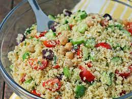
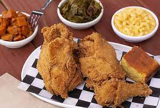

Couscous
Place? Turkey. This Couscous recipe is an old one, but with some new touches, it is trending in the culinary world.

If you love Turkish food, then you might already know what Kisir is. It is a bulgur salad that is made with fine-grind bulgur wheat, red pepper paste, lemon and fresh vegetables. This recipe is actually one that we love to make in our family! If you open the refrigerator at my mom’s place, there is one thing you will always find: some ready to eat Kisir for the family. Because we just love it THAT much. What else can we say about Kisir? It is quick and easy to make, healthy, satiating and crazy delicious. Sounds good, right?
Ingredients:
- Fine-grind bulgur wheat (also called kisirlik or köftelik bulgur)
- Vegetables
- Parsley
- Lemon
- Olive oil
- Turkish red pepper paste
- Red pepper flakes
Instructions:
- Prepare the bulgur wheat. Just boil some water, add the bulgur wheat and water to a bowl, cover the bowl with a dish cloth and let the bulgur wheat sit.
- Prepare the vegetables. Simply wash and chop the vegetables and parsley. Juice the lemon.
- Make the base for the salad. First, fluff the bulgur wheat with a fork. Then, add the red pepper paste, red pepper flakes and salt and pepper to the now cooked bulgur wheat and mix everything until well combined.
- Mix in the remaining ingredients. Add the vegetables, parsley, lemon juice and olive oil to the bulgur wheat. Mix everything. Add more red pepper flakes or salt and pepper if needed.
Source: https://www.bitesofberi.com/kisir-turkish-bulgur-salad/
Fried Chickes "a la Grandma"
Chicken? The best! Here is a delicious fried chicken recipe easy to cook and especially, FAST to cook!

This recipe has the potential to bring back great childhood memories. Grandmas are amazing, especially when they prepare the most delicious dishes for the entire family. This dish is versitile, can be used for lunch or dinner, at family meals as well as festive gatherings. It is easy to cook and delicious to eat! Let' start, shall we?
Ingredients:
- 1 (2 1/2-3 lb) broiler-fryer chickens, cut up buttermilk, enough to cover the bird
- 1 tablespoon hot sauce butter flavor shortening (for frying)
- 1 cup all-purpose flour
- 1 tablespoon garlic powder
- 1 teaspoon onion powder
Instructions:
- Heat to about 370º. (No thermometer needed, really. It'll get hot enough while chicken rests AFTER coating if you have your flame on about medium.) If it starts to smoke, turn it down immediately a bit.
- In a doubled brown paper lunch sack, mix together all of the dry ingredients.
- Shake off excess; place on waxed paper for 15 minutes or until dry. Brown until golden on bottom (good)(skin) side. When chicken pieces are golden on one side, turn pieces over, cover with tight fitting lid, and reduce heat to a simmer, turning chicken pieces ocaisionally, for 35 to 40 minutes or until juices run clear and chicken is tender. *When lid is placed on, and heat is reduced to a good simmer, the good side of pieces are the top sides. After about 10 minutes, turn back to skin-side down. After another 10 minutes or so, turn back to skin-side up for the last 10-15 minutes.).
Source: https://www.food.com/recipe/grandmas-southern-fried-chicken-130569